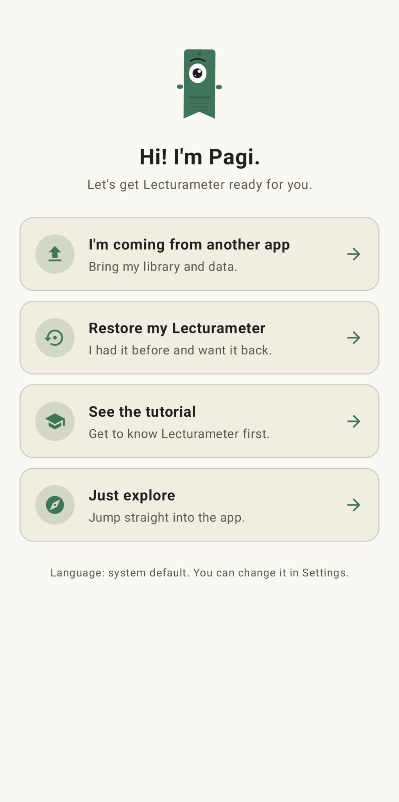
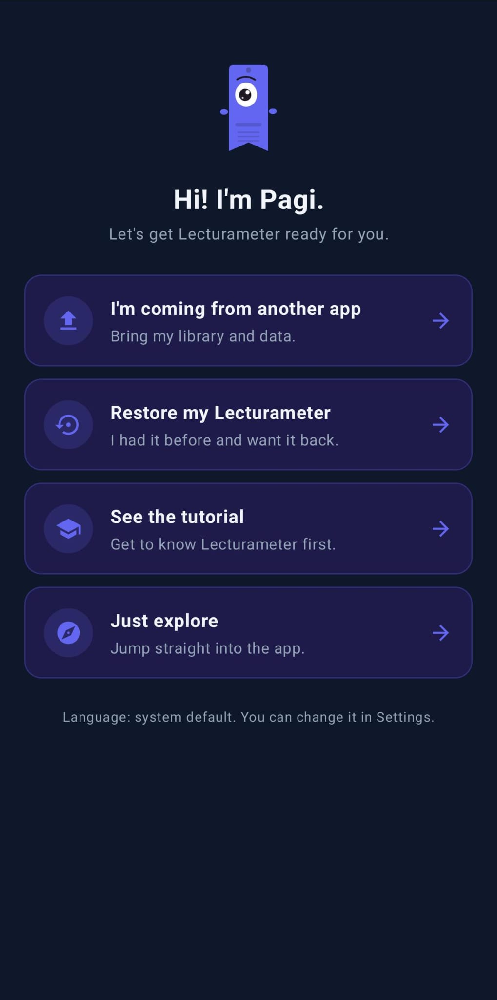
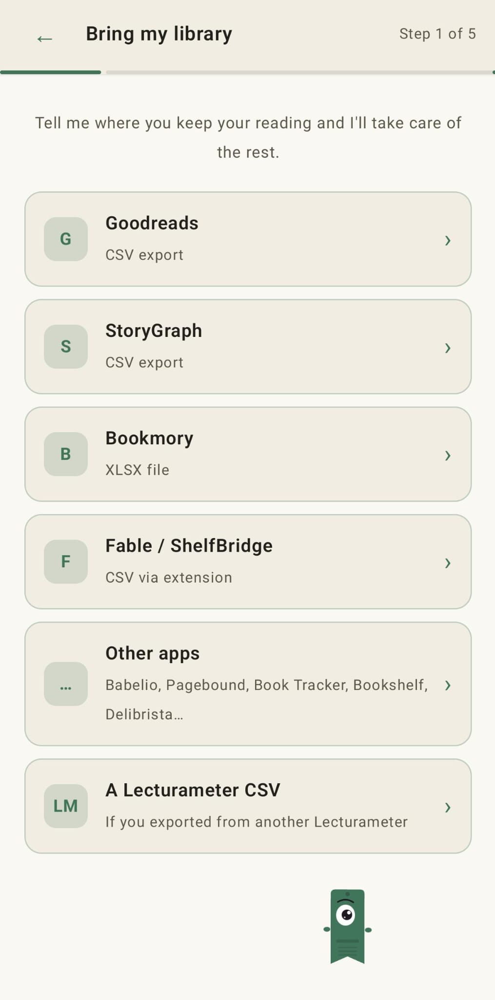
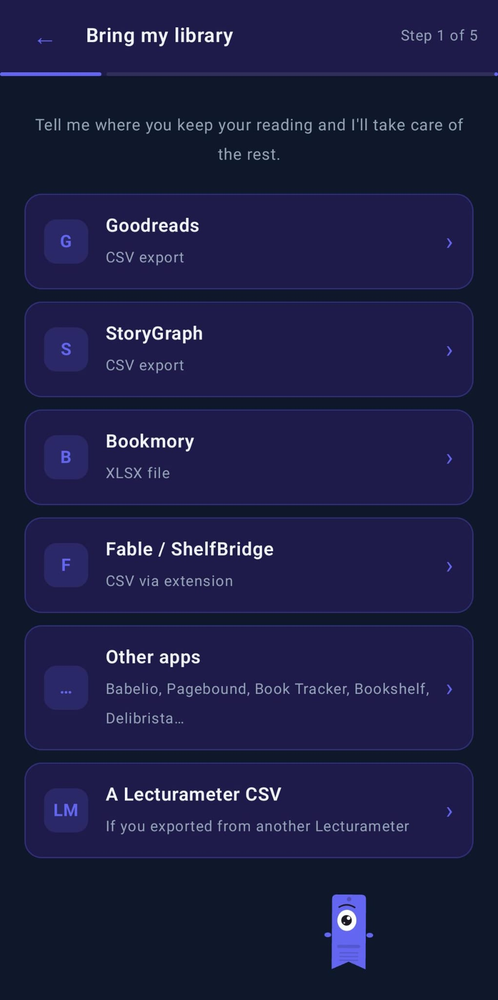

Blog · 2026-09-14
How to bring your Goodreads (and StoryGraph, Bookmory, Fable…) library into Lecturameter
Lecturameter reads exports from Goodreads, StoryGraph, Bookmory, Fable/ShelfBridge and several other reading apps. This post walks through each one.
Where your library lives
If you already track your reading somewhere else and you want to move it, Lecturameter accepts exports from most of the popular tracking apps: Goodreads, StoryGraph, Bookmory, Fable (via the ShelfBridge extension) and a handful of smaller ones. This post covers the export step for each source, so you can pick the one you use and follow the steps.
Nothing here needs a Lecturameter account. The file lives on your phone.
The wizard, briefly
When you open Lecturameter for the first time, Pagi asks what you want to do. One of the options is "I'm coming from another app". Pick that and you land on the import wizard.


The wizard is a list of sources. You tap the one you use, hand it the file, and Lecturameter reads the schema. Same wizard also lives in Settings, Import, so you can run it later.


Goodreads (CSV)
Goodreads still lets you export your library, but the option is hidden and it only works from the desktop site. On mobile it is missing.
- Go to goodreads.com and log in.
- Click "My Books" in the top nav.
- On the left sidebar, under "Tools", click "Import and export".
- Look for the section "Export your books" and click "Export Library".
- Wait a minute. When the file is ready you see a link like "Your export from Goodreads" that downloads a CSV.
The file is one row per book with around thirty columns. What matters: title, author, ISBN, your rating, dates read, dates added, shelves (custom and exclusive) and your review text. Private notes come across in the "Private Notes" column, which is easy to miss.
The rating uses whole stars, not half stars. Dates are in "YYYY/MM/DD" format. Friends, comments, likes and groups stay on Goodreads. That is not a Lecturameter limitation, they simply are not in the file.
StoryGraph (CSV)
StoryGraph exports from the web too. Go to app.thestorygraph.com, open Settings, then Manage Account, and use the Export option. You get a CSV with your books, shelves, ratings, review text, dates and tags. Lecturameter reads it directly and maps the fields.
Bookmory (XLSX)
Inside Bookmory open Settings, then Backup, then "Export to Excel". You get an .xlsx with separate sheets for books, ratings and reading sessions. Lecturameter reads the xlsx directly; you do not need to convert it.
Fable / ShelfBridge (CSV via extension)
Fable itself does not have an export button. The community project ShelfBridge is a browser extension that reads your Fable data and produces a Fable-compatible CSV. Lecturameter accepts that file in the Fable / ShelfBridge slot of the wizard.
Other apps
The wizard also has an "Other apps" slot for Babelio, Pagebound, Book Tracker, Bookshelf, Delibrista and similar. If the app you use can produce a CSV or an XLSX, Lecturameter tries to detect the schema automatically.
If yours is not recognised, the fallback is easy: open the file in a spreadsheet, keep the columns for title, author, rating, dates and shelf, save it as CSV, and import it as Goodreads. The Goodreads reader is the most permissive of the lot.
What comes across, what does not
For all sources, the same things travel: books, shelves, ratings, dates and personal notes or reviews.
The same things stay behind on every service too: friends, comments, likes, groups and follows. That is a limitation of the export files themselves, not of Lecturameter. There is nothing to bring across because they were never in the file.
After the import
If you skipped the wizard on first launch, the import also lives in Settings, Import. It reads the shelves in your file and asks which ones you want to bring across. Ratings, dates and notes come with the books. Nothing goes to a server. Your library ends up on your phone.
Try it on Android
See also: How fast do I really read? · Reading time or pages · Goodreads Alternative